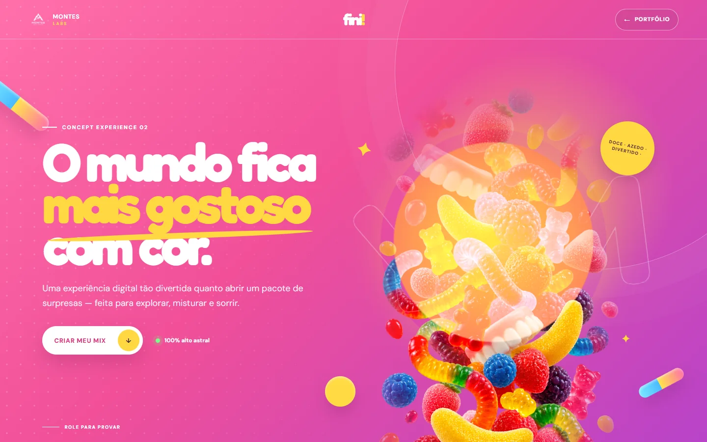
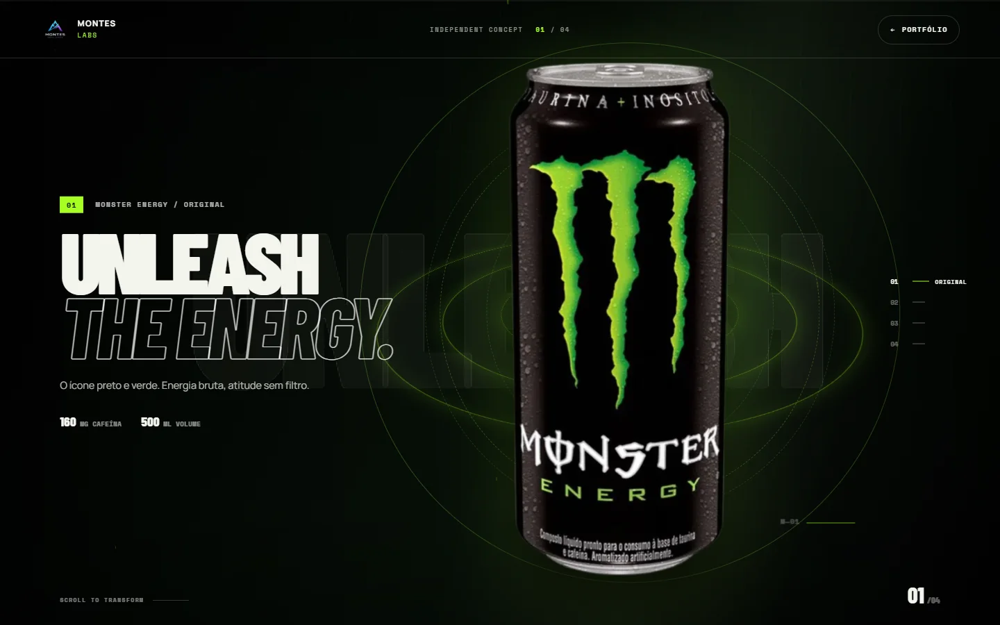
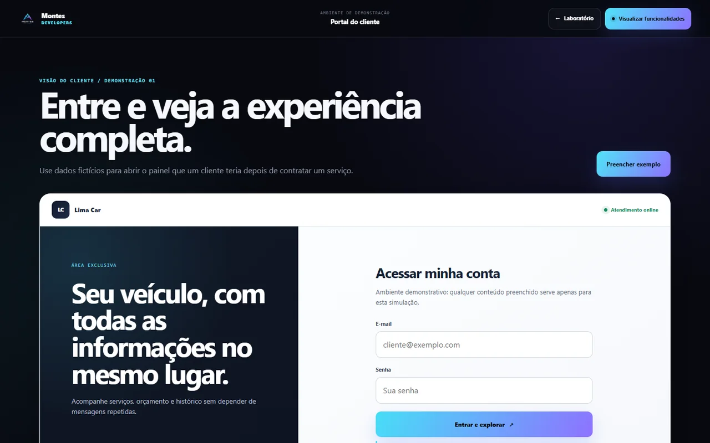
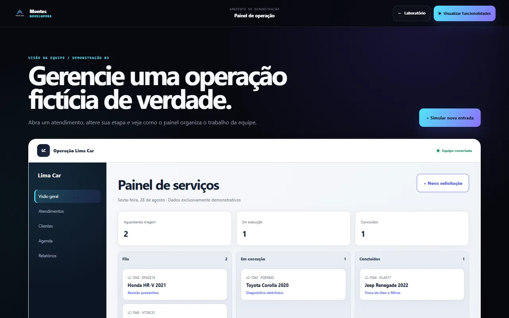
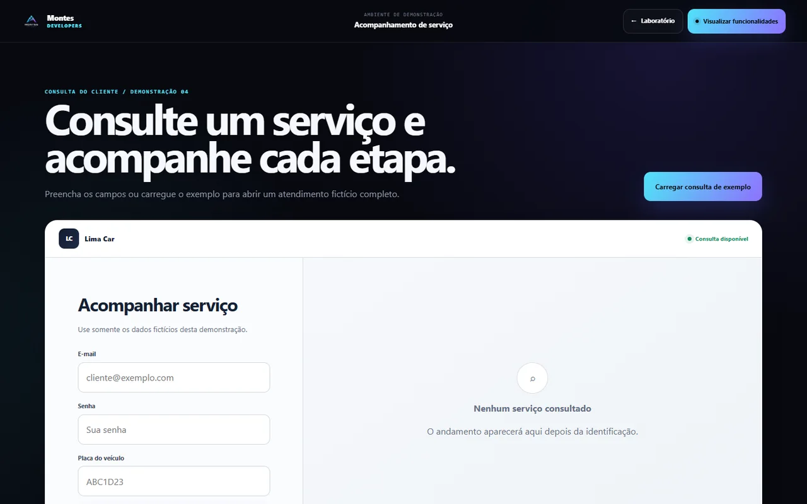

Testar site ↗Site experimental Fini Candyverse
Exploração aplicada
Conceitos, experiências e sistemas desenvolvidos para mostrar o que conseguimos transformar em realidade.
Ideia → linguagem → produtoExperiências de marca

Testar site ↗Site experimental Fini Candyverse
Site experimental Monster Energy

Testar site ↗Sistemas
Sistema funcional de gestão automotiva



Seu projeto pode ser o próximo